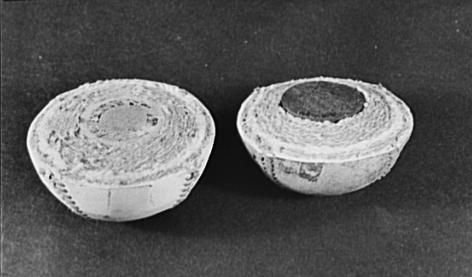
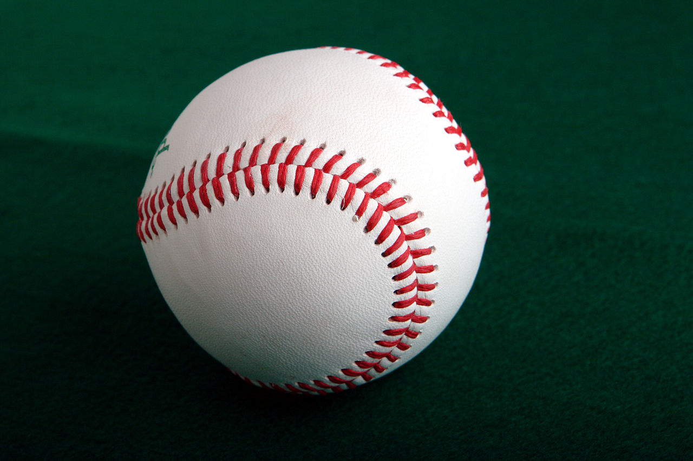

Baseball labda*
A baseball-labdĂĄt a baseball labdajĂĄtĂŠkban hasznĂĄljĂĄk. A speciĂĄlis labdĂĄnak gumibĂłl vagy parafĂĄbĂłl kĂŠszĂźlt kĂśzepe van, ezt fonallal tekerik be ĂŠs bĹrrel fedik. A baseball-labdĂĄk kerĂźlete 22â24 cm, tĂśmege 142-149 gramm.A labda kifejlĹdĂŠse

A napjainkban is hasznĂĄlt baseball-labdĂĄk ĹsĂŠt a 19. szĂĄzad vĂŠgĂŠn a Spalding sportszergyĂĄrtĂł cĂŠg fejlesztette ki, amelyet LAbert Spalding, legendĂĄs baseballjĂĄtĂŠkos alapĂtott. A labdĂĄk kĂśzepĂŠn egy parafĂĄbĂłl kĂŠszĂźlt mag volt, amelyet zsinĂłrral tekertek kĂśrbe, ennek hossza akĂĄr tĂśbb kilomĂŠter is lehetett. A labdĂĄk kĂźlsejĂŠt bĹr borĂtja.
A mĂĄsodik vilĂĄghĂĄborĂş alatt a parafa hiĂĄnyciknnek szĂĄmĂtott, illetve felhasznĂĄlĂĄsa szigorĂş korlĂĄtokba ĂźtkĂśzĂśtt, ezĂŠrt a hĂĄborĂş alatt a parafa magot gumimaggal helyettesĂtettĂŠk. Napjainkban szĂĄmos kĂsĂŠrletet tettek arra, hogy a labda termĂŠszetes eredetĹą komponenseit mĹąanyagokkal vĂĄltsĂĄk fel, de ezeket a jĂĄtĂŠkosok ĂĄltalĂĄban alacsonyabb minĹsĂŠgĹąnek tartjĂĄk, a Major League Baseball mĂŠrkĹzĂŠsein nem is hasznĂĄlhatĂłk.
A labda kialakĂtĂĄsa, a felhasznĂĄlt anyagok termĂŠszetesen befolyĂĄsoljĂĄk a labda tulajdonsĂĄgait. Napjainkban a bĹr bevonat sokkal szorosabb, ezĂŠrt a labdĂĄk is sokkal kemĂŠnyebbnek ĂŠrzĹdnek, az ĂźtĹt nagyobb sebessĂŠggel hagyjĂĄk el. A bĹrbevonat varrĂĄsai pedig azt befolyĂĄsoljĂĄk, hogy mennyire tudja megpĂśrgetni, csavarni a labdĂĄt a dobĂł.
A baseball mĂŠrkĹzĂŠseken kezdetben csak egy labdĂĄt hasznĂĄltak, kivĂŠve ha a labda a jĂĄtĂŠk sorĂĄn megrongĂĄlĂłdott, a nĂŠzĹk kĂśzĂŠ ĂźtĂśtt labdĂĄkat a csapatok alkalmazottai szereztĂŠk vissza, hogy azok ismĂŠt rĂŠszt vegyenek a jĂĄtĂŠkban. A mĂŠrkĹzĂŠs sorĂĄn a labda ĂĄltalĂĄban elkoszosodott, itt-ott megsĂŠrĂźlt, ami termĂŠszetesen befolyĂĄsolta a labda tulajdonsĂĄgait ĂŠs akĂĄr a mĂŠrkĹzĂŠs eredmĂŠnyĂŠt is. Azonban 1920-ban egy ĂźtĹjĂĄtĂŠkost, Ray Chapman-t a fejĂŠn talĂĄlt el egy labda egy szĂźrkĂźleti mĂŠrkĹzĂŠs alatt ĂŠs belehalt sĂŠrĂźlĂŠseibe. Ezt kĂśvetĹen mĂĄr nagyobb gondot fordĂtottak arra, hogy lehetĹsĂŠg szerint tiszta ĂŠs sĂŠrĂźlĂŠsmentes labdĂĄkat hasznĂĄljanak a mĂŠrkĹzĂŠsek alatt.
FĂŠlbevĂĄgott baseball-labdĂĄk, amelyek az ĂśsszetĂŠtelt szemlĂŠltetik. A bal oldalon lĂĄthatĂł a hagyomĂĄnyos, parafa kĂśzepĹą labda, a jobb oldalon a gumikĂśzepĹą.

Napjainkban a Major League mĂŠrkĹzĂŠsein hasznĂĄlt hivatalos labdĂĄkat a Rawlings sportszergyĂĄrtĂł cĂŠg szĂĄllĂtja, a labdĂĄk Costa Rica-ban kĂŠszĂźlnek kĂŠzi munkĂĄval. A Rawlings cĂŠg 1977-ben lett a liga hivatalos beszĂĄllĂtĂłja, elĹtte a Spalding cĂŠg tĂśltĂśtte be ezt a szerepet. 1973-ig a labdĂĄkat lĂłbĹr bevonattal kĂŠszĂtettĂŠk, de elsĹsorban az alapanyag beszerzĂŠse kĂśzĂźli nehĂŠzsĂŠgek miatt 1974-ben ĂĄttĂŠrtek a tehĂŠnbĹrre.
A 20. szĂĄzad sorĂĄn a Major League-ban kĂŠtfĂŠle labdĂĄt hasznĂĄltak: az American League ĂŠs a National League labdĂĄit. A labdĂĄk minden lĂŠnyeges tulajdonsĂĄgukban megegyeztek, kivĂŠve, hogy az American Leagues labdĂĄn az "Official American League" felirat ĂŠs az AL liga elnĂśkĂŠnek alĂĄĂrĂĄsa volt lĂĄthatĂł, mĂg a National League labdĂĄin az "Official National League" ĂŠs a NL liga elnĂśkĂŠnek alĂĄĂrĂĄsa volt. 2000-ben a Major League ĂĄtszervezĂŠse utĂĄn megszĹąnt a kĂŠt liga ĂŠs egysĂŠges labdĂĄt kezdtek hasznĂĄlni.
A jelenleg ĂŠrvĂŠnyes szabĂĄlyok ĂŠrtelmĂŠben a labda sĂşlya 142-149 gramm, kerĂźlete 22â24 cm.A labdĂĄk kĂźlsejĂŠn Ăśsszesen 108 dupla ĂśltĂŠs talĂĄlhatĂł.
A mai mĂŠrkĹzĂŠseken akĂĄr tĂśbb tucat labdĂĄt is elhasznĂĄlhatnak, mivel szĂĄmos karcolĂĄs, elszĂnezĹdĂŠs keletkezhet a labdĂĄkon, amit ĂĄltalĂĄban nem kĂvĂĄnatosnak tartanak. A nĂŠzĹk kĂśzĂŠ kiĂźtĂśtt labdĂĄkat a nĂŠzĹk megtarthatjĂĄk, kivĂŠve ha valami jelentĹs alkalom, pl. rekordszĂĄmĂş hazafutĂĄs vagy szemĂŠlyes okok miatt a labdĂĄt visszakĂŠrik. Ilyenkor cserĂŠbe a nĂŠzĹ pl. a jĂĄtĂŠkos alĂĄĂrĂĄsĂĄval ellĂĄtott ĂźtĹt kaphat.
A Major League Baseball csapatai a labdĂĄkat a "Baseball Rubbing Mud"-al kenik be jĂĄtĂŠk elĹtt